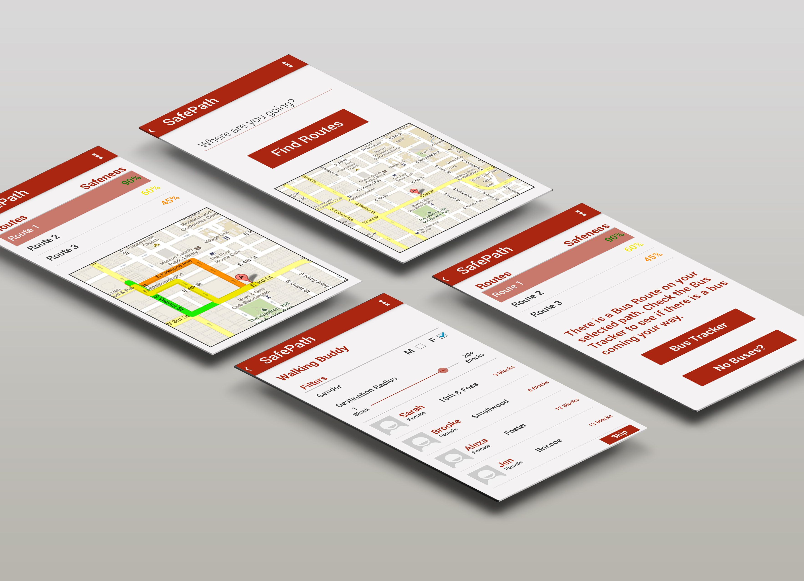

SafePath
SafePath is a mobile application concept that gives the user various walking paths to their destination based on the surrounding area's overall safeness level. The application also includes a "WalkingBuddy" feature, which gives students the option of walking home with another person if they are uncomfortable of walking alone. The user will be provided a list of other students in the area, who have also indicated they want someone to walk home with, based on their destination and the user's gender preference. Once both users agree, they will be able to see each other's location and any contact information they choose to share so they can meet up.
You can view the full project report for this project here.
Client: Academic
Project Type: Design Concept
Responsibilities: Research, Ideation, Sketches, Mockups
Date Completed: Fall 2014

Predisposition
Before we started any research, my team listed things we believed to be true about students walking at night. These gave us an understanding of what we already knew about our design context. Together, our predispositions could be seen as an hypothesis of sorts.
Our predispositions were:
Darkness - When walking at night, students feel especially unsafe when walking through poorly lit areas.
Gender - Female students tend to feel less safe than men when walking at night. Female students can be more at risk.
Being Alone - Students, usually female students, feel especially unsafe when they are walking alone at night. Walking alone at night increases the risk of something happening to that person.
Under the Influence - Because nightlife is a large part of being a college student, sometimes students can be under some type of influence when attempting to walk home. These students are subject to a decrease in judgment due to these influences, creating a possible unsafe situation.
Research + Insights
As a part of our research, we conducted short interviews with our fellow Indiana University students to gain a better understanding to why students feel unsafe when walking at night as well as how they currently deal with it.
Our insights are the issues that we interpreted from our interviews. These insights helped us to shape the specific problem that we wanted to solve.
We categorized our findings into these key terms:
Safe Places - Our participants indicated that poorly lit and/or unpopulated areas on and around campus effected their feeling of safeness when walking at night. Our female participants said that they feel particularly concerned because they were women.
To feel safer, our participants said that they tried to stay in areas that were well-lit and well-populated when walking at night.
Walking Companion - Some of our participants also mentioned that walking alone made them more concerned about their safety. Once again, our female participants were more concerned about walking alone at night than our male participants.
When it came to the situation of walking alone, the female students told us that they always made sure that they were with at least one other person. Being with a group made them feel safer than being alone.
Through the knowledge we gained from our research, my team and I identified the problem that we wanted to focus our project on:
Create a safer way for students who are walking alone at night get to and/or from their destinations, while avoiding poorly lit and unpopulated areas.
Concept Development
After discovering our problem, we came up with potential concepts that could help to make students feel more comfortable walking at night, specifically when they are alone.
The first issue we decided to tackle was our insight of “Safe Places.” First, we had to define what it meant for a place to be considered “safe.” In our context, a safe place was one that was well-lit and well populated. We also thought that the crime level of an area should also be considered when deciding whether or not a place was safe.
With our definition of a “Safe Place,” we then thought that our concept should include a way to encourage students to stay in these safe areas when walking to their destinations.
Our next major issue that we needed to address was the matter of a “Walking Companion.” Generally, students felt safer when they were walking with another person. So, our concept needed to have a feature that allowed students to someway find people to walk with
Concept
Using the research and insights we gathered, we came up with a concept that could, potentially, be a solution to our problem: a mobile application that we dubbed “SafePath.”
There are two main functions of SafePath: the PathFinder function and the WalkingBuddy function. The PathFinder will provide the user with different paths to their destination based on the area’s safeness. The safety percentages are calculated based on the amount of people that are generally in the area at the time, the amount of crime alerts that have occurred in the area, and the amount of time it will take for the user to arrive at their destination. While the safest route is always the recommended route, the user has the ability to choose any route they would like, including short but less safe routes.
The WalkingBuddy feature is somewhat similar to Uber, but for walking. The user will be given a list of other students in the area, who have also indicated they want someone to walk home with, based on their own destination and their gender preference of their WalkingBuddy. Both users must agree to be each other’s WalkingBuddy before they will able to proceed further. Once both users agree, they will be able to see each others location and any contact information they choose to share so they can meet up.
To ensure the safety of the students who use the application, anyone who wants to use it must (1) verify they are students of the university by entering their university ID and (2) give permission to the SafePath team to run a brief background check to make sure they haven’t committed any crimes before they are given access to use the application. Safety is the most important aspect of this concept, therefore, precautions must be put in place to create a safe and trustworthy experience for students using the application. Just because everyone who uses the app is a student at the same university doesn’t mean they can’t have malicious intentions. So, checking the background of potential users was just one way we thought that problem could be avoided.

Feedback + Modfications
Once we had our concept, we decided to do get some feedback. We showed our concept to the same participants that we interviewed in the research stage to get their feedback on it.
Our participants were pleased to see that we tried to address the issues they voiced to us in our concept. The feedback was mostly positive. They thought the “WalkingBuddy” feature was an interesting idea.
But, one of our participants pointed out that while we know that the walking partner will be an Indiana University student, there is no guarantee that they will be “nice.” To address this potential safety issue, we included the ability to show ratings for the Walking Buddies, similar to Uber. When a person has safely arrived at their destination, they can rate their WalkingBuddy based on their experience. Did the other person have ill intentions? Or were they rude? Things like that would determine whether or not a person gets a positive rating, or get reported depending on the issue. Our thinking was that the rating system would be a way to “weed out” the people whose intentions did not match the application’s purpose.